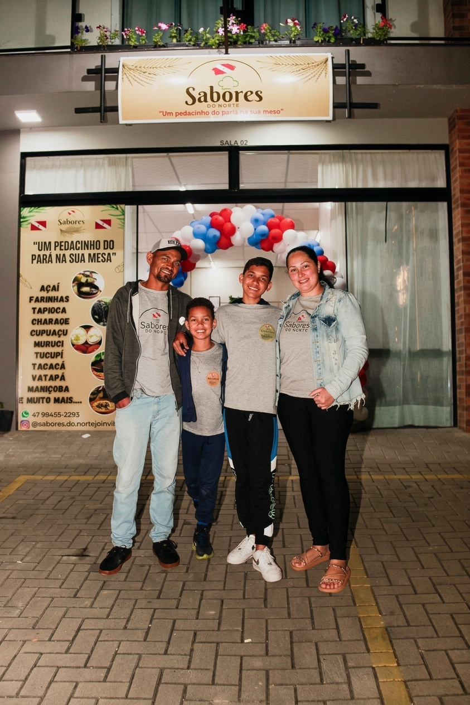

01 / CLÁSSICO PARAENSE
Tacacá
O clássico paraense preparado com tucupi quentinho, camarões secos, goma de tapioca e jambu, a erva amazônica que proporciona aquela sensação única de formigamento na boca.
Sabores autênticos, receitas tradicionais e o carinho da nossa terra em cada experiência.
“Nas margens do Amazonas nasceu nossa paixão. Trazemos muito mais que comida: levamos afeto, memória e identidade. Em cada receita, uma história. Em cada prato, uma viagem pelas raízes do Pará.”
Cada prato é preparado com o carinho e a dedicação das nossas raízes paraenses, preservando os sabores e a autenticidade da nossa terra.
Trouxemos a cultura, os ingredientes e os sabores únicos do Norte para Santa Catarina, criando uma conexão especial entre duas regiões do Brasil.
Nossas receitas carregam histórias e conhecimentos transmitidos entre gerações, preservando a riqueza da culinária paraense.
Uma história que nasceu da saudade de casa e se transformou em um sonho compartilhado por meio da gastronomia paraense.
Há quase oito anos, Beatriz chegou a Joinville em busca de novas oportunidades e de um futuro melhor para sua família. Longe de casa, a saudade do Pará estava sempre presente, especialmente das lembranças, dos aromas e dos sabores únicos de sua terra natal.
Foi então que ela encontrou na cozinha muito mais do que uma profissão: encontrou uma maneira de manter suas raízes vivas. Com o talento e o carinho que sempre fizeram parte de sua história, começou a transformar a saudade em receitas, compartilhando um pedacinho da cultura amazônica com o Sul do Brasil.
Tudo começou de forma simples, com um delivery de pratos típicos paraenses aos finais de semana, preparado com carinho na cozinha de casa. O sabor conquistou as pessoas, as recomendações se multiplicaram e o que nasceu entre as paredes do lar da família começou a ganhar proporções cada vez maiores.
O carinho dos clientes e a força do boca a boca mostraram que aquele sonho poderia ir muito além. Em agosto de 2024, um novo capítulo começou: o Sabores do Norte ganhou sua própria casa! Um espaço acolhedor, pensado para receber pessoas e celebrar a riqueza da cultura paraense por meio da gastronomia.
Cada prato servido carrega o carinho de quem conhece o verdadeiro significado da saudade de casa. Nossa missão é levar você a uma viagem pela Amazônia através dos sabores, aromas e tradições da culinária paraense, criando uma ponte de experiências entre o Norte e o Sul do Brasil.

Beatriz desembarca em Santa Catarina trazendo a bagagem de afeto, tradições culinárias e a saudade do Pará.
As primeiras encomendas preparadas na cozinha de casa conquistam a comunidade joinvilense pelo sabor autêntico.
Inauguração do restaurante físico na Rua Marquês de Maricá, acolhendo clientes com a cultura paraense viva.
A comida do Pará não é só tempero. Ela carrega histórias, raízes e memórias. Eu queria que as pessoas sentissem tudo isso. Trazer um pedacinho de casa de volta à mesa, despertar a saudade e transformá-la em uma experiência. Esse é o nosso propósito.
Sinta o calor do Norte em cada mordida.
O clássico paraense preparado com tucupi quentinho, camarões secos, goma de tapioca e jambu, a erva amazônica que proporciona aquela sensação única de formigamento na boca.
A famosa feijoada paraense, preparada com folhas de mandioca brava (maniva), cozidas por vários dias e acompanhadas de ingredientes tradicionais que dão origem a um sabor intenso e inconfundível.
Cremoso e cheio de personalidade, preparado com temperos tradicionais, azeite de dendê, camarão seco e castanha-do-pará. Uma combinação marcante que traduz a riqueza e a tradição da culinária paraense.
Açaí com sabor autêntico da Amazônia, acompanhado de farinha de tapioca, peixe frito ou camarão. Uma combinação tradicional para quem deseja conhecer o verdadeiro jeito paraense de apreciar o açaí.
Uma seleção de delícias inspiradas nos sabores do Norte: sobremesas de cupuaçu, mousses, bolos e outras receitas regionais preparadas para adoçar sua experiência com um toque especial da Amazônia.
“Trabalhamos com ingredientes cuidadosamente selecionados, muitos deles trazidos diretamente do Pará: tucupi, jambu, camarão seco regional, polpa natural de açaí e temperos tradicionais que preservam a essência e a autenticidade da culinária paraense.”
Veja de perto a autenticidade, as cores e o carinho presentes em cada prato que preparamos. Sabores genuínos, ingredientes regionais e receitas tradicionais que levam você a uma verdadeira viagem pelo coração da Amazônia.
“Cada prato carrega um pouco da história, da cultura e das tradições do Pará. Preparados com ingredientes regionais e muito carinho, nossos sabores preservam a essência da culinária paraense e proporcionam uma experiência que vai muito além da mesa.”
Quero conhecer o cardápio!O Pará pulsa cultura! São cores, aromas, sons, sabores e tradições que despertam emoções e conectam gerações. Aqui, fazemos muito mais do que servir comida: compartilhamos nossas raízes e convidamos você a mergulhar na riqueza da cultura paraense.
Uma das maiores manifestações religiosas do Brasil e uma das celebrações mais importantes da cultura paraense. Todos os anos, milhões de fiéis se reúnem em Belém para homenagear Nossa Senhora de Nazaré, em uma demonstração emocionante de fé, devoção, tradição e união que atravessa gerações.
Uma das mais tradicionais expressões culturais do Pará! Ao som dos tambores e instrumentos regionais, o Carimbó mistura música, dança e tradição em movimentos cheios de alegria, cores e histórias que atravessam gerações.
A vida às margens dos rios amazônicos é marcada por uma relação profunda com as águas. Para muitas comunidades, o rio é caminho, fonte de sustento, espaço de convivência e parte essencial do dia a dia. Um modo de viver que revela a riqueza dos saberes, dos costumes e das tradições transmitidas de geração em geração.
Do formigamento marcante do jambu ao sabor inconfundível do tucupi, descubra os ingredientes que dão alma à gastronomia do Pará.
O jambu é muito mais que uma erva: é uma experiência! Suas folhas provocam um formigamento característico na boca, uma sensação surpreendente que desperta os sentidos e torna a culinária paraense ainda mais especial.
Extraído da mandioca brava, o tucupi é um dos grandes tesouros da culinária paraense. Seu preparo tradicional exige conhecimento, cuidado e paciência, transformando esse ingrediente em uma das bases mais marcantes dos sabores amazônicos.
Nosso povo carrega a força das águas, a sabedoria da floresta e a riqueza de tradições que atravessam gerações. É um povo de coração acolhedor, marcado pela simplicidade, pela alegria e pelo orgulho de suas raízes. Essa essência está presente em nossa cultura, em nossa história e em cada prato que servimos.
Nosso espaço foi pensado para acolher você em uma verdadeira experiência paraense. Cada detalhe carrega um pouco da nossa cultura, das nossas raízes e da hospitalidade do Norte do Brasil. Venha conhecer nosso cantinho, sentir-se em casa e viver momentos especiais ao redor de sabores e tradições que encantam. “Entre, fique à vontade e sinta-se um pouquinho mais perto do Pará!”
Nosso espaço foi pensado com carinho para oferecer uma experiência especial, unindo o conforto de um ambiente familiar à riqueza da cultura paraense. Cada detalhe contribui para criar uma atmosfera acolhedora, onde você pode compartilhar bons momentos, descobrir novos sabores e se sentir em casa.
Estamos em Joinville, prontos para receber você com o melhor da culinária paraense!
Rua Marquês de Maricá, 76 — Vila Nova
Joinville — SC, Brasil
Venha conhecer o Sabores do Norte! Será um prazer receber você em nosso cantinho paraense em Joinville. Esperamos por sua visita com muita hospitalidade, sabores autênticos e, claro, um delicioso tacacá quentinho!